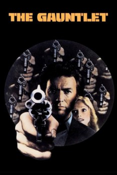

Country:United States, 109 minutes
Spoken languages:English
Genres:Drama, Action, Crime, Thriller
Director(s):Clint Eastwood
Writer(s):Michael Butler, Dennis Shryack, Clint Eastwood
Video Codec:Unknown
Number: 117

Certification:R
Storyline:
Phoenix cop Ben Shockley is well on his way to becoming a derelict when he is assigned to transport a witness from Las Vegas. The witness turns out to be a belligerent prostitute with mob ties—and incriminating information regarding a high-ranking official.
Cast:
Clint Eastwood (as Ben Shockley), Sondra Locke (as Gus Mally), Pat Hingle (as Josephson), William Prince (as Blakelock), Bill McKinney (as Constable)
Medium: Media file,
Location: D:\Clint Eastwood\The Gauntlet\The.Gauntlet.1977.DVDRip.DivX-gF.mp4
Loaned: No
Aspect ratio: Unknown